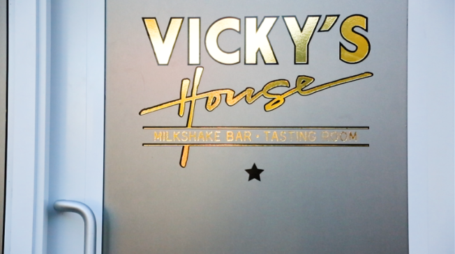
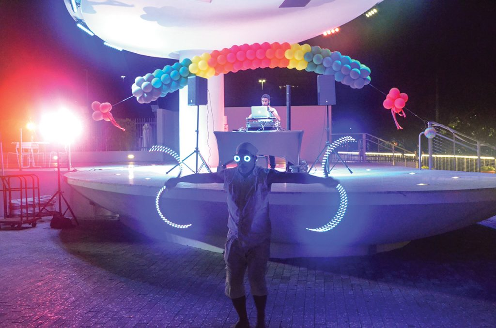
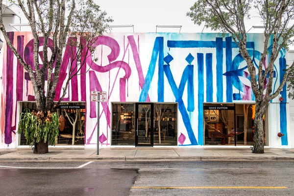
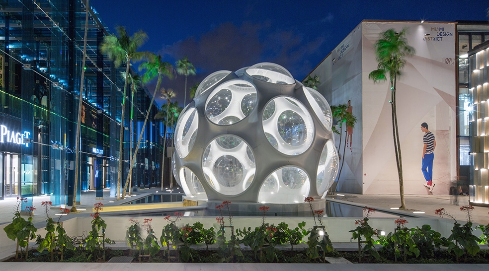
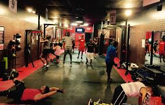

Shaking up the 80's
If you didn't think time travel was possible, I dare you to walk through the phone booth located inside of Lokal. A majical 80's themed kitchen awaits. The replica of Matt Kuschers moms house from the time serves up the largest, funkiest and grooviest milkshakes. But it goes beyond that, a remake of the old living room is also inside this discrete shack. A Nintendo '84, Pacman machine and decor that Matt fetched from his mothers attic encompass the Reagan-Bush era to the T.
Not into the exotic shakes? don't worry they have other tasty treats you wont be able to resist. From regular milkshaes to vegan ice cream sandwiches, there is a treat for everyone on the menu.
Shinning on the sidelines
Diagnosed with an autoimmune disease at the age of 16, this young athlete is still performing at the collegiate level. Multiple Sclerosis is a disease that effects your nervous system and disrupts the flow of information within the brain, and between the brain and body. Sidney Sterling has a unique case of MS, with the support of her doctor, her family and community she has continued to persue the sport that she loves. In fact, her MS has pushed her to new heights, reamining positvie and strong she is cheerful that one day there will be a cure.

Facts about Multiple Scelrosis
- he cause of MS is still unknown
- the disease is triggered by as-yet-unidentified environmental factor in a person who is genetically predisposed to respond
- The progress, severity and specific symptoms of MS in any one person cannot yet be predicted
- Most people with MS are diagnosed between the ages of 20 and 50
- At least two to three times more women than men being diagnosed with the disease.
Shop to Stop MS is an event to raise funds for research in MS at the University of Miami Miller School of Medicine. The event takes place in November at Saks Fifth Avenue in Dadeland Mall and one hundred percent fo the proceeds go towards benefitting the cause.
Rainbow Rager
The Rainbow Rager was a collaborative event put on by the Rainbow Roundtable, a collective of UM departments and undergraduate and graduate student organizations dedicated to addressing LGBTQ in additon to issues of inclusion, empowerment, visibility, education, advocacy, intergroup engagement, programming and outreach across various populations and interests. The rager was held on campus the lakeside patio on April, 13, 2017.
Miami Design District
The Miami design district is a creative neighborhood in the heart of the city. The .249 square miles is a juxtaposition between modern art and elegance. The once low-rise warehouses have been converted into luxury shops, art galleries and restaurants. The Design district has risen to fame and has become a hot spot for the local and global consumer.
 9 Rounds
Thirty minute workouts are a new fad. For the busy parent, business person, student this workout is designed to eliminate all excuses while burning up to 500 calories. Nine rounds, located on 8th street in Miami, Florida offers 30 minutes of intense cardio, kickbox training for any level athlete. No class times, no waiting, no hassle. You just walk in put on your gloves on and get to work. It is fast paced and fun and exercises are modified to fit your fitnes goals.
Vist their Website and recieve your first week free!
Groupon code available